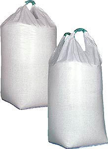
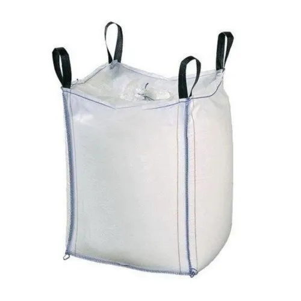
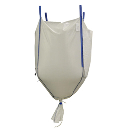

- 
-

- 
-

- 
-

FIBC Bag
Single and double loop bags are those FIBC bags which are primarily used in agricultural sector for packing fertilizers, seeds, cement etc. These Bags are unique because of its construction using tubular body fabric which directly gets extended to create 1 or 2 lifting loops with or without inserted/ suspended liners as per client’s requirement.
Circular bags have a tubular/ circular body that is seamless, with only a top and bottom panel stitched into the bag. Due to its tubular design, these bags don’t have any seams at the vertical edges. Circular bulk bags are ideal bags for fine and hydroscopic material.
Builder bags are high volume usage bags which are specially made for building and construction industries. The bag includes 4 vertical seams and is composed of a single canvas, forming a U. The unique design of this bag is they can be reinforced with loops as per client’s requirements so that one person can easily handle bag with the help of fork lift thus reducing the labor cost.
Baffle bags have baffles in corners that basically help the bags to retain their cubic shape once stuffed with the material. These bags don’t bulge and remain in the shape the way they are formed. The unique feature of this bag is they maintain their shape throughout which helps in optimum utilization of space during warehousing and transportation.
Conical bags are cone shaped bag from bottom and are especially made for tacky products which are not so free flowing. These bags are used to prevent use of expensive adjustments for discharging stored material and can be discharged quickly and easily. The bags can be coated or uncoated and with or without liner as per client’s requirements.
Sling bags are heavy load bearing capacity bags. These bags avoid leakage and breakage. Also the bags can be reused. These bags work like a FIBC bag which is used for the shipment of heavy and large cargo of packed goods. It is a vest cost effective option for heavy goods. Sling bags aid in the prevention of hazardous conditions during transit.